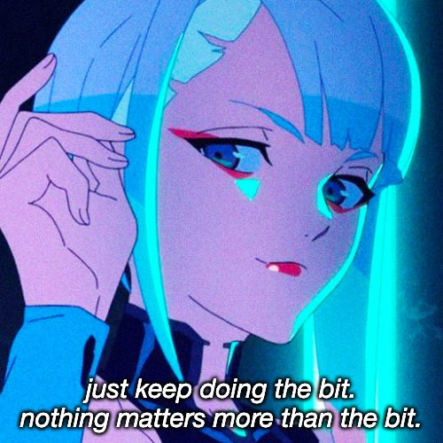

how to overcome mediocrity or skill issues
just by putting in more hours, thats it.
like it or not thats the way ig, you can do it fast tho but
you need to put in more hours someday. i learnt this in hard way.
i still haven't overcome my skill issues yet btw.

also keep doing the bit.
image credits